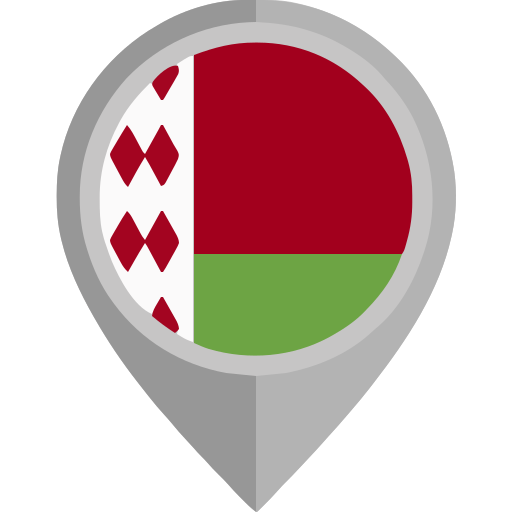
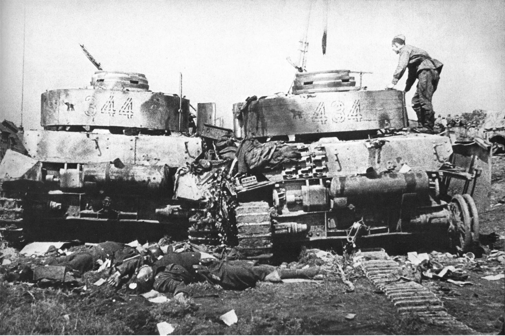

Замысел советского командования заключался в нанесении скоординированных ударов по немецким войскам с целью достижения стратегической инициативы и окружения основных сил противника. План предполагал наступление двух группировок советских войск, действующих из разных направлений, с последующей их координацией и соединением для окружения и уничтожения немецких сил. Северная группировка, включающая 3-ю и 48-ю армии, а также 9-й танковый корпус, должна была наступать из района севернее Рогачёва в направлении на Бобруйск и Осиповичи. Южная группировка, состоящая из 65-й и 28-й армий, 1-го гвардейского танкового корпуса и сил фронта под командованием генерала И. А. Плиева, планировала наступление из района южнее Паричи по общему направлению на Старые Дороги и Слуцк. Особенностью планировавшихся действий было то, что подвижные группы обеих группировок должны были соединиться западнее Бобруйска, создав условия для окружения и последующего уничтожения основных сил 9-й немецкой армии. После этого войска должны были развивать дальнейшее наступление, продвигаясь до рубежа Пуховичи - Слуцк. Для успешной поддержки этих наступательных операций были созданы две авиационные группы - северная и южная, предназначенные для обеспечения воздушного прикрытия и управления в ходе наступления обеих группировок. Этот стратегический план отражал глубокую продуманность советского командования и их стремление нанести мощный удар по противнику, прорвать его оборону.
План, утверждённый Ставкой Верховного главнокомандования, предусматривал проведение Бобруйской операции на первом этапе операции «Багратион», которая должна была охватывать правый фланг 1‑го Белорусского фронта. Основной задачей советских войск являлся прорыв глубоких оборонительных рубежей вермахта, расположенных по реке Друть, Днепр, Добрица, Добысна, Ола и Березина - всего пять линий обороны. Для достижения этой цели командование создало мощные ударные группировки, превосходившие немецкие силы в живой силе в 3,3 раза, артиллерии и миномётах - в 6,3 раза, танках и самоходных орудиях - в 3,6 раза, авиации - в 3,4 раза. План Рокоссовского предполагал прорыв на двух ключевых участках с целью окружения и уничтожения группировки противника в районе Бобруйска, а также одновременного выхода в районы Пуховичей и Слуцка. Наступление началось ранним утром 24 июня. В первые дни в полосе левого фланга фронта ситуация складывалась благоприятно. После улучшения погоды появилась возможность нанести массированный авиаудар, в котором участвовали 224 бомбардировщика и штурмовики. В результате 65-я и 28-я армии, при активной поддержке авиации, прорвали немецкую оборону на 10 км, освободили вокруг 50 населённых пунктов и расширили фронт прорыва до 30 км. Для закрепления успеха и отрезания путей отступления немецких войск в районе Бобруйска к бою подключили 1-й гвардейский танковый корпус под командованием П. И. Батаева. Уже к третьему дню соединения вышли к реке Березина южнее города и к реке Птичь - вглубь территории противника. В ходе наступательных действий поддержка предоставлялась через корабли Днепровской военной флотилии, которые успешно десантировались в Здудичах и районе Скрыгалово - Конковичи. Тем временем, правый фланг - рогачёвско-бобруйское направление - развивал наступление гораздо медленнее. Там действовали 3-я и 48-я армии. Борьба шла с сильно укреплённой обороной, лишь частично преодолевая траншеи, а болотистая местность тормозила переправы и продвижение танков. В итоге, однако, части армии с трудом прошли линии обороны, заняли вторую траншею, а севернее - прорвались, достигнув новых рубежей, и перебросили силы на перспективные направления. Ключевым моментом стало введение во встречную борьбу конно-механизированной группы генерала Плиева, которая, действуя в северных районах, вышла к реке Птичь, перерезав пути отступления немцев. В ночь на 27 июня 1-й гвардейский танковый корпус, осуществив манёвр, соединялся с частями 28-й армии, одновременно блокируя пути отхода в западном и юго-западном направлениях. Эффективную поддержку оказывала 16-я воздушная армия, нанося постоянные удары по переправам и отходящему врагу. Наступление продолжали и войска 3-й армии. Однако его темпы оказались ниже ожидаемых. Поэтому командующий генерал А. В. Горбатов 25 июня ввёл в бой 9-й танковый корпус, который благодаря прорезанию лесисто-болотистой местности и поддержке двух авиадивизий начал стремительно окружать Бобруйск с северо-востока. В результате было окружено около 40 тысяч немецких солдат и офицеров (по разным данным - до 70 тысяч), с техникой и вооружением - более 150 танков, штурмовых орудий, артиллерийских систем, машин и грузовых автомобилей. Массовый авиационный удар советских ВВС, который продолжался полтора часа, уничтожил значительное количество военных и техники противника, разрушил коммуникации и деморализовал немецкое командование. В зоне авиаудара обнаружено более 1 000 трупов, а технику - сотни танков и орудий, тысячи автомагистралей

В результате Бобруйской операции войска 1-го Белорусского фронта за всего пять суток смогли окружить и разгромить основные силы 9-й немецкой армии, а также создать условия для быстрого продвижения на Минск и Барановичи. К исходу 29 июня советские войска продвинулись примерно на 110 километров. Окружение бобруйской группировки было достигнуто благодаря двустороннему охвату, выполненному в очень короткие сроки, что позволило эффективно изолировать немецкие силы в оперативной глубине. Особенностью уничтожения этой группировки стало массовое использование авиации фронта для нанесения ударов по окружённым и выведению из строя их тыловых коммуникаций, живой силы и техники. Такой масштабный воздушный удар значительно усилил успех наступления. Благодаря этим достижениям, двадцать соединений и частей, отличившихся в боях за Бобруйск, были удостоены почётного наименования «Бобруйские», что подчеркивает их героизм и вклад в победу.